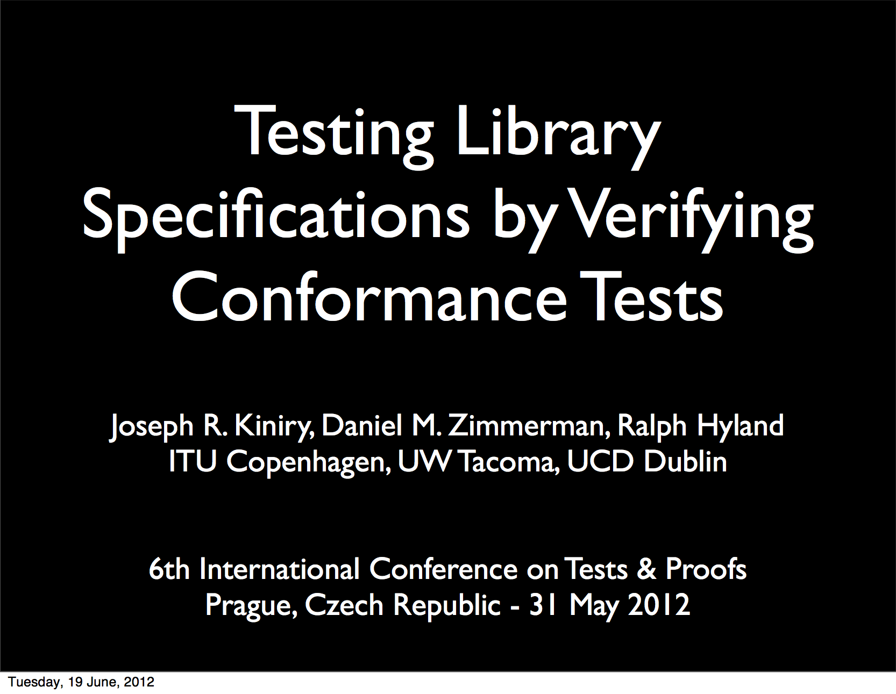

Validating Semantics
Dan Zimmerman gave a talk entitled Testing Library Specifications by Verifying Conformance Tests at TAP 2012 in Prague.
|  | Abstract:
Formal specifications of standard libraries are necessary when statically verifying software that uses those libraries. Library specifications must be both correct, accurately reflecting library behavior, and useful, describing library behavior in sufficient detail to allow static verification of client programs. Specification and verification researchers regularly face the question of whether the library specifications we use are correct and useful, and we have collectively provided no good answers. Over the past few years we have created and refined a software engineering process, which we call the Formal CTD Process (FCTD), to address this problem. Although FCTD is primarily targeted toward those who write Java libraries (or specifications for existing Java libraries) using the Java Modeling Language (JML), its techniques are broadly applicable. The key to FCTD is its novel usage of library conformance test suites. Rather than executing the conformance tests, FCTD uses them to measure the correctness and utility of specifications through static verification. FCTD is beginning to see significant use within the JML community and is the cornerstone process of the JML Spec-a-thons, meetings that bring JML researchers and practitioners together for intensive specification writing sessions. This article describes the Formal CTD Process, its use in small case studies, and its broad application to the standard Java class library. |